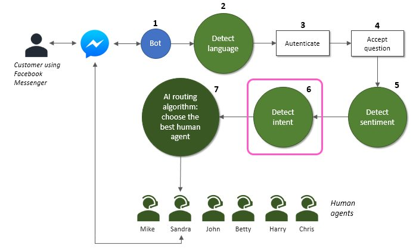
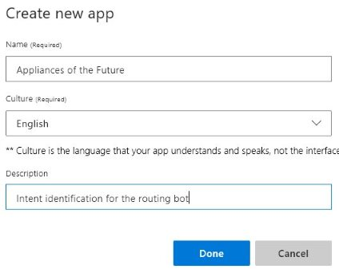
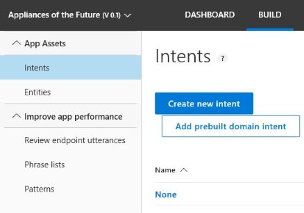
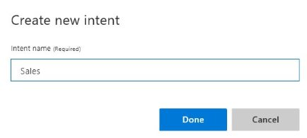
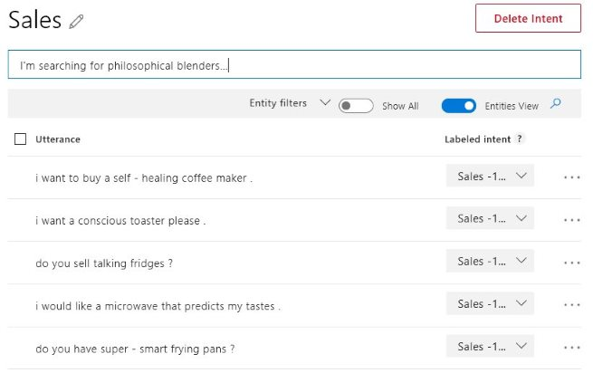
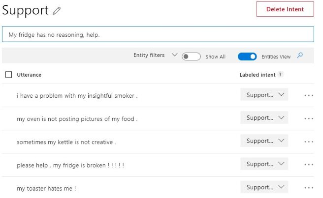
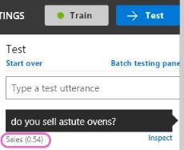
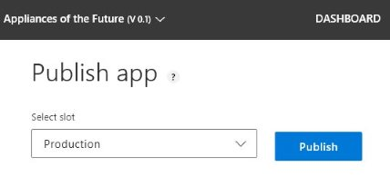
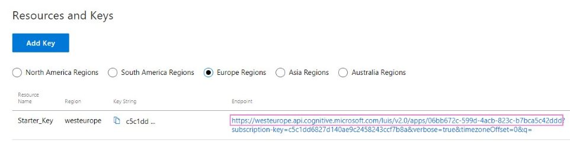
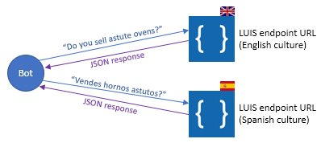

|
|
Building an AI-powered routing chatbot
Part 3 of 4 |
|
|
|
Building an AI-powered routing chatbot
Part 3 of 4 |
|
At this point our bot is available on Facebook Messenger, responds in English or Spanish according to the customer language, and starts a conversation to identify the customer and receive the main question, detecting its sentiment.
Now we'll want to identify the intent, or purpose, of the customer question (step 6). More specifically, we'll want to guess if it is a sales issue or a support issue, in order to transfer to the proper department.

Detecting the intent is not so easy as detecting the language or the sentiment, because it's a task that is specific to our business: only we know how our customers interact with our store and with which purposes. There's no pre-trained cloud service that we can use for that.
Fortunately, there are services that we can train to meet our goals. For this purpose we'll use Microsoft Language Understanding service, or LUIS. LUIS can be trained with sentences from our customers and generalize knowledge to find the intent of unseen sentences.
1. Get a LUIS subscription key
First you need to subscribe LUIS in Microsoft Azure and get a LUIS subscription key. You can find instructions here. This key will be used in all the requests you send to LUIS.
2. Go to the LUIS page of your region (https://eu.luis.ai in our case) and create an app. An app is associated to a given culture. Set the culture to English (another app must be created for Spanish).

3. Select "Intents" on the left and click "Create a new intent".

4. Let's call it "Sales".

5. Ok, we've created our Sales intent. Now we'll want to add some sentences that we think our customers could use to buy something in our store. Add as many as possible, as they will be the training set for LUIS, allowing it to correctly classify unseen sentences in production phase.

6. Let's create another intent called "Support" and repeat the process.

7. Having enough Sales and Support examples we should now train the app. Click on the "Train" button (upper right corner). If train succeeds, it will change the color to green.
8. After being trained, the app can be tested. Press the "Test" button (upper right corner), type unseen utterances and check the result. If the result is incorrect, you can fix the classification manually and retrain.

9. Publish the app to make it available: go to "Publish" section and click the "Publish" button.

10. Ok, we've created the intents, trained, tested and published the system. It's time to call it from our bot. For that we'll need a LUIS endpoint - an URL that we can call to request the service. At the bottom of the "Publish" section you can find your key and the corresponding endpoint.

11. Aren't we missing something? Yes: the Spanish culture. Create a new app for Spanish culture and repeat all the process with Spanish utterances.

If things go as expected, we now have a LUIS endpoint for the English culture and a LUIS endpoint for the Spanish culture, and we can call them from our code to guess the intents of English and Spanish sentences. A good tutorial on how to do it using Python can be found here.
The LUIS calls are located in file file TextAnalytics.py. You must setup your LUIS subscription key, created on step 1, and your LUIS base URLs, referenced on step 10.
# Needed for Microsoft Language Understanding (LUIS) service
self.LUIS_subscription_key = "Replace by your LUIS subscription key"
self.LUIS_en_base_url = "Replace by your LUIS endpoint for English text" # ex: https://westeurope.api.cognitive.microsoft.com/luis/v2.0/apps/xxxxx
self.LUIS_es_base_url = "Replace by your LUIS endpoint for Spanish text" # ex: https://westeurope.api.cognitive.microsoft.com/luis/v2.0/apps/yyyyy
The intent is returned by the guess_intent method, calling the appropriate LUIS endpoint.
def guess_intent(self, text, language, verbose=False):
""" Guesses the intent of a given text.
Returns the intent: "sales", "support" or "other".
Note: this method uses Microsoft LUIS to extract the intent,
which in turn must be configured and trained manually in the LUIS website
(the european version https://eu.luis.ai/home was used in this sample).
"""
headers = {
# Request headers
'Ocp-Apim-Subscription-Key': self.LUIS_subscription_key,
}
params ={
# Query parameter
'q': text,
# Optional request parameters, set to default values
'timezoneOffset': '0',
'verbose': 'true',
'spellCheck': 'false',
'staging': 'false',
}
ret = "other"
try:
if language=="es":
# Spanish culture
response = requests.get(self.LUIS_es_base_url, headers=headers, params=params)
intents = response.json()
top_scoring_intent = intents["topScoringIntent"]
if top_scoring_intent["intent"] == "Ventas":
ret = "sales"
if top_scoring_intent["intent"] == "Soporte":
ret = "support"
score = top_scoring_intent["score"]
if score < 0.4:
# Return "other" if there is not enough confidence on any known intent...
ret = "other"
else:
# English culture
response = requests.get(self.LUIS_en_base_url, headers=headers, params=params)
intents = response.json()
top_scoring_intent = intents["topScoringIntent"]
if top_scoring_intent["intent"] == "Sales":
ret = "sales"
if top_scoring_intent["intent"] == "Support":
ret = "support"
score = top_scoring_intent["score"]
if score < 0.4:
# Return "other" if there is not enough confidence on any known intent...
ret = "other"
except Exception as e:
print("Error in guess_intent: {}".format(e))
ret = "other"
if verbose:
print("LUIS return for input '{}':".format(text))
pprint(intents)
print("guess_intent returning '{}'".format(ret))
return ret
And that's it! Our bot is now able to guess if a customer wants to talk with the sales department or the support department. Don't forget that LUIS will be more accurate if you train it with many utterances, and that you should check once in a while if there are customer sentences classified incorrectly and, if needed, classify them manually and retrain the system.
In the next and final post of this series we'll show how to use all this information to select the best human agent to handle the interaction. Until then, happy coding!

Previous: identifying the customer, the language and the sentiment using Microsoft Text Analytics services
Next: choosing the best human agent using a neural network